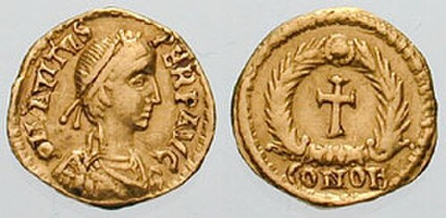

Gouden Solidus van Constantijn
Numismatiek | Laat-Romeinse Tijd (4e eeuw n.Chr.) | Constantinopel
De Solidus was een gouden munt die rond 312 n.Chr. werd geïntroduceerd door keizer Constantijn de Grote. Het doel was om de haperende Romeinse economie te stabiliseren na een lange periode van hyperinflatie. Dankzij het betrouwbare en constante goudgewicht van circa 4,5 gram bleef deze munt eeuwenlang de internationale standaard voor handel in Europa en het Nabije Oosten.
Op de voorzijde (obvers) zien we het krachtige portret van de keizer met een diademenkrans, kijkend naar het oosten. De achterzijde (revers) toont militaire en vroegchristelijke symbolen, gecombineerd met de inscriptie 'Victoria Augg'. Munten waren in de oudheid het belangrijkste massamedium; ze verspreidden de beeltenis van de nieuwe machthebber en zijn religieuze of militaire overwinningen tot in de verste uithoeken van het rijk.